灵根显现，修行自启
五岁判定灵根，修士按年积累真元。古法、新法各循条件突破；同门修士、功法与世界状态都会影响成长。
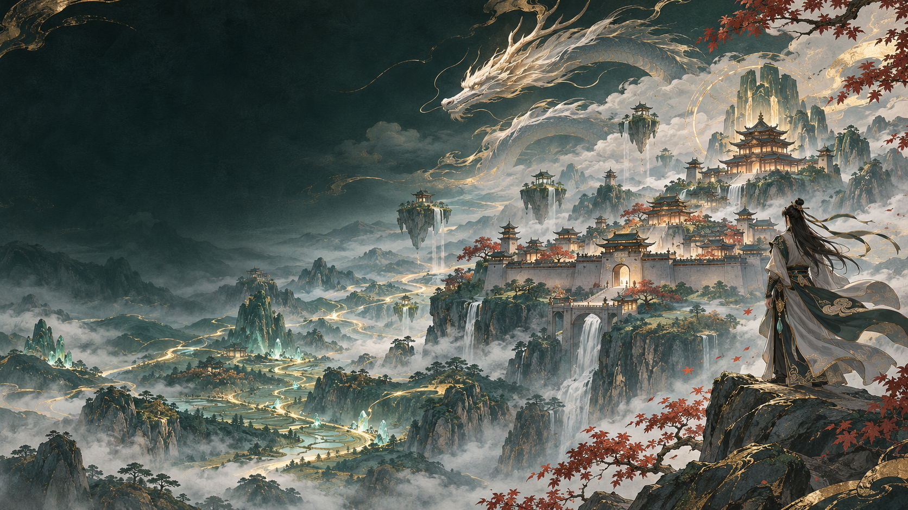
玩家版正式发布WORLD BOX MODV 0.9.2
修士逐年修行，宗门与家族随时代更迭；玄黄文明、山海妖兽、秘境与轮回，共同写下一部无人预知的仙录。
一方沙盘 · 多线并行 · 百代更迭
01 THE LIVING WORLD
《我的模拟长生路》把修仙拆成一场持续演化的沙盘。人物会成长、交往与陨落；世界会兴起势力、经历异变，也会把每一段因缘留在记录里。
五岁判定灵根，修士按年积累真元。古法、新法各循条件突破；同门修士、功法与世界状态都会影响成长。
十宗与万仙盟、五老会随时代出现。家族延续传承、经营家库、影响城市；玄黄族沿用原版文明 AI 建国与发展。
探索、交易、兽潮、战斗、还真与天下纪事交错发生。你可以改变局势，也可以旁观这片天地自行走过漫长岁月。
02 SEVEN REALMS
不是点一下就成仙：灵根、真元、境界条件与世界局势共同影响突破。达到门槛，也仍可能失败。
感气入门
道基渐稳
丹成有象
神魂成婴
神识外照
道心相合
仙路未尽
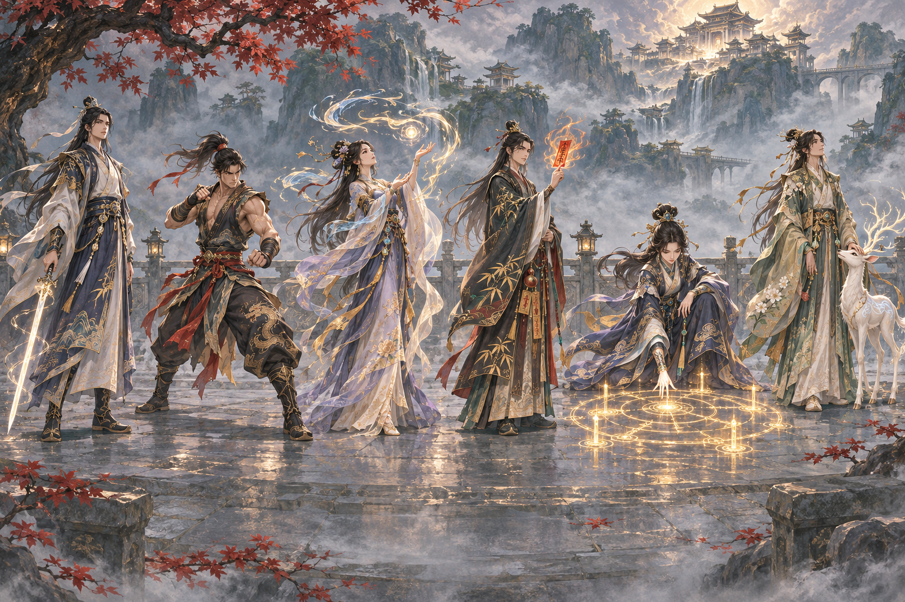
03 CULTIVATION CAREERS
六种战斗职业各有五阶主动与被动技能，满足条件后会在战斗中自动施放。点选职业，阅览招式与对应图标。
战斗职业 · 修行支脉
以剑入道，习得五阶主动与被动技能。战斗时依据目标、灵力与冷却条件自动出招。
选择或悬停一只妖兽，读它的本命神通。
在兽潮调控中设置间隔、数量倍率、单次规模与总量上限；手动召潮可以直接请求，并在纪事中查看结果。水生妖兽在水域出现，其他种类在陆地出现。
05 XUANHUANG CIVILIZATION
玄黄族沿用 WorldBox 原生生活与文明 AI：繁衍、迁徙、建城、造船；其文明拥有 23 类专属建筑与三种船只。
从一座主厅开始，
让城镇在时间里生长。
玄黄族有男女、儿童、士兵、领袖、国王与老年形态。城市会发展自己的住宅、主厅、藏书阁、集市、庙宇、矿场与风车；船只则连接迁徙、运输与渔业。
玩家版使用文明正常建设流程；手动摆放全部建筑的按钮属于开发者工具，不包含在玩家操作入口中。
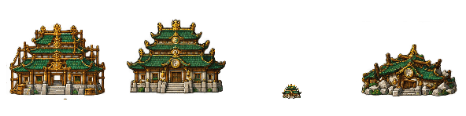
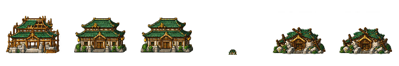
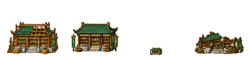
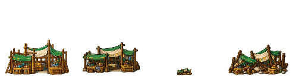
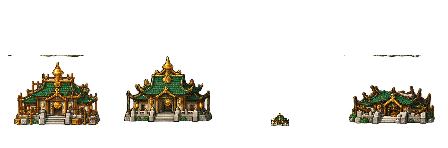
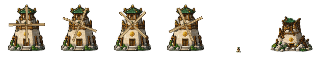
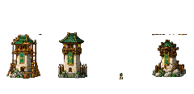
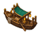
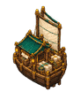
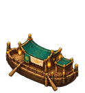
06 DISCOVERY · CRAFT · TRADE
探索能带回传承与灵材，也可能让修士负伤、甚至身陨。秘境深入的最终死亡率最高可达 40%。
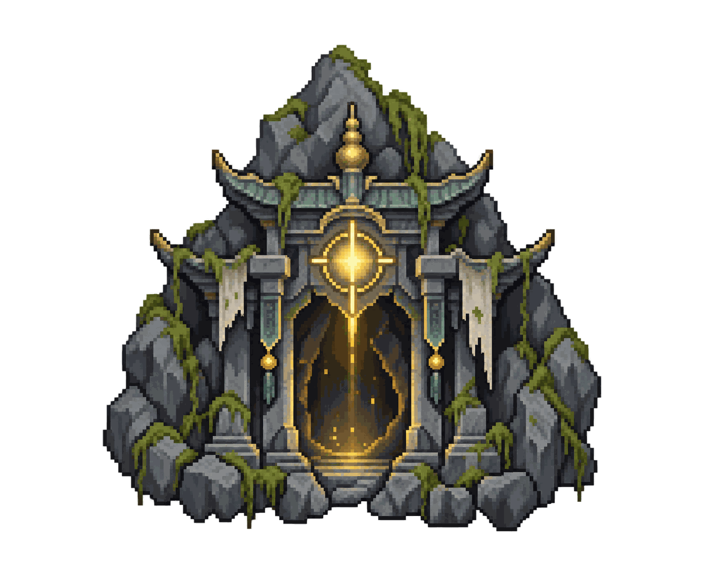
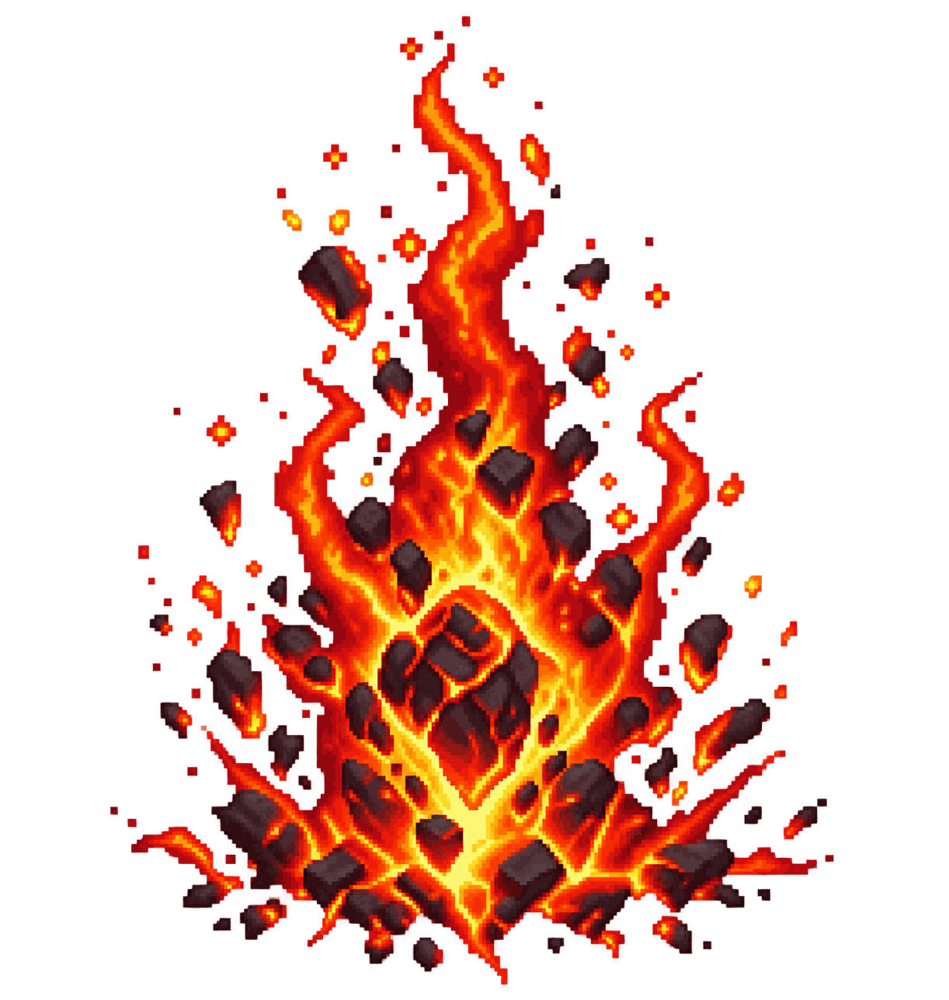
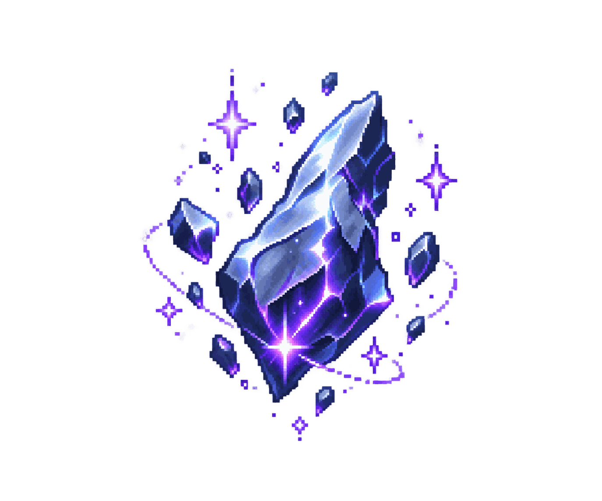
修士依职业品阶与持有灵材自动炼制；妖兽通材与物种专材也会进入对应配方。
丹 · 器 · 符 · 自动生产人物按自身需求买卖物品，使用灵石或贡献。可以查看挂单、最新上架与成交记录，无需手动下单。
灵石 · 贡献 · 成交纪事所获机缘、人物归途与天地异变皆有记录；年月流转之后，仍可回看此界兴衰。
探索 · 传承 · 纪事07 QIANKUN INVENTORY · SPELL CODEX
从凡阶灵材到天阶法宝，逐品阅览四类珍藏与对应图鉴；法术则依七境列入法术录。
先分丹药、法宝、符箓与材料，再依天、地、玄、黄、凡五阶细阅。
丹药、法宝、符箓与材料，各循品阶归入此录。
从炼气吐纳到长生寂光，依施放境界归卷。
法术学习与施放各有条件；人物可随研习与实战逐步精进。
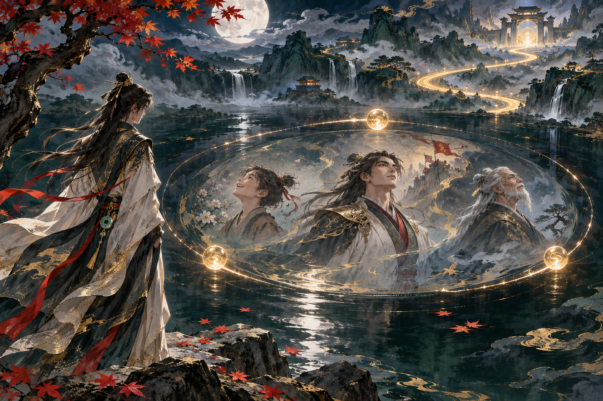
还真回溯 · 概念插画08 REBIRTH · MEMORY · HISTORY
还真不是一次普通读档：它把一位宿主的今生封存为前世，让你带着有限的遗产回到锚定的旧时空，再看一方世界如何走向新的轮回。
等待还真自然降临，或在特质编辑器赋予还真；确认宿主后保存当前世界。
首次绑定获得 80 点空间灵蕴；每枚锚点消耗 80 点，最多保存三枚，也可开启自动锚定。
选择归途锚点并再次确认，当前世界成为前世档案，宿主由此回到锚定之时。
按当前名额，从前世实际拥有之物中选择遗产；已保存的旧世仍可回看。
还真重启一段旅程，也为已经走过的岁月留下卷宗。
09 BEGIN YOUR JOURNEY
下载 0.9.2 玩家版，进入一个会自行生长的修仙世界。